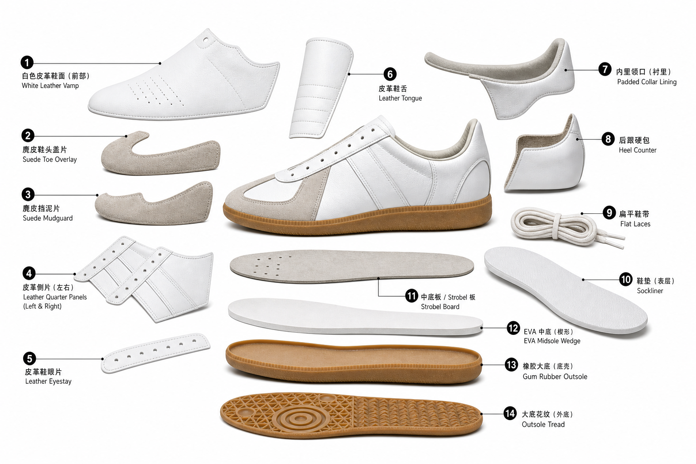

德训鞋 / German Army Trainer Style

零件索引
| # | 中文 / English | 功能 |
|---|---|---|
| 1 | 白色皮革鞋面 / White Leather Vamp | 形成前帮主体，提供复古德训鞋干净的皮革面感。 |
| 2 | 麂皮鞋头盖片 / Suede Toe Overlay | 保护鞋头并形成德训鞋典型 T 字鞋头视觉。 |
| 3 | 麂皮挡泥片 / Suede Mudguard | 环绕前掌下缘，增加耐磨和层次。 |
| 4 | 皮革侧片 / Leather Quarter Panels | 包裹中后足，支撑鞋带受力区。 |
| 5 | 皮革鞋眼片 / Leather Eyestay | 承载鞋带孔，分散系带拉力。 |
| 6 | 皮革鞋舌 / Leather Tongue | 保护脚背，改善鞋带压迫。 |
| 7 | 内里领口 / Padded Collar Lining | 接触脚踝，提升舒适和后跟包裹。 |
| 8 | 后跟硬包 / Heel Counter | 稳定后跟，维持鞋型。 |
| 9 | 扁平鞋带 / Flat Laces | 调节包裹，符合复古低帮鞋视觉。 |
| 10 | 鞋垫 / Sockliner | 脚直接踩踏的舒适层。 |
| 11 | 中底板 / Strobel Board | 连接鞋面底部，形成内部底层。 |
| 12 | EVA 中底 / EVA Midsole Wedge | 薄型缓震层，保持低轮廓。 |
| 13 | 橡胶大底 / Gum Rubber Outsole | 接地、耐磨、提供复古胶底质感。 |
| 14 | 大底花纹 / Outsole Tread | 提供抓地，并强化胶底识别度。 |